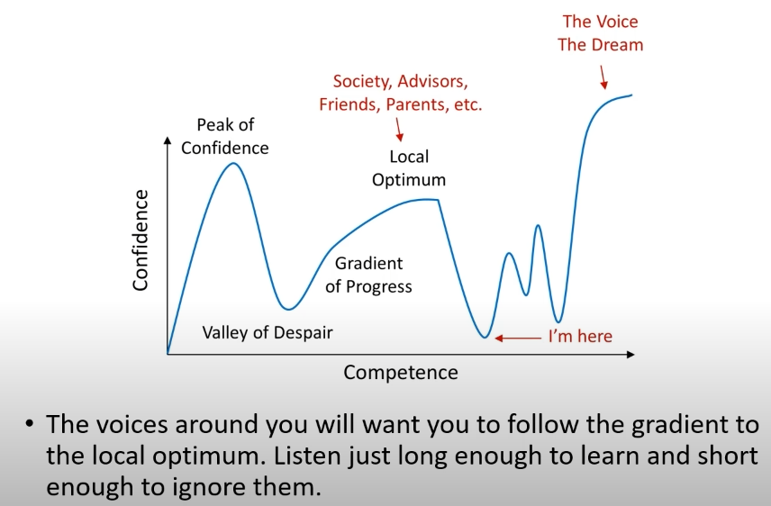

On humble beginnings
22 Oct 2023
See all posts
On Humble Beginnings
There will come a time where these humble beginnings become , not a liberating, but a limiting factor in our life. What do I mean by this?
These beginnings are great, starting the game from scratch, we are indeed really excited. And won't change a thing. We are who we are because of our circumstances.
But, we've got to understand what is most important to us in the future, from the universe perspective. We will HAVE to let go of the past, and think of it as just a chance of nature, as a relic of the past, that we were happen to be born in a place where we were.

Not letting go, I believe cause people to settle for local maximums. We know this , even now, that there will come a time when we are around people, one of the smartest in the world, and these beginnings won't really matter. What will matter is our creative act of the universe. These are just small details, we've got to treat them as small details.
This doesn't mean we don't appreciate where we come from, and stay humble to ourselves and others, always. this is the fun :)
On humble beginnings
22 Oct 2023 See all postsThere will come a time where these humble beginnings become , not a liberating, but a limiting factor in our life. What do I mean by this?
These beginnings are great, starting the game from scratch, we are indeed really excited. And won't change a thing. We are who we are because of our circumstances.
But, we've got to understand what is most important to us in the future, from the universe perspective. We will HAVE to let go of the past, and think of it as just a chance of nature, as a relic of the past, that we were happen to be born in a place where we were.
Not letting go, I believe cause people to settle for local maximums. We know this , even now, that there will come a time when we are around people, one of the smartest in the world, and these beginnings won't really matter. What will matter is our creative act of the universe. These are just small details, we've got to treat them as small details.
This doesn't mean we don't appreciate where we come from, and stay humble to ourselves and others, always. this is the fun :)